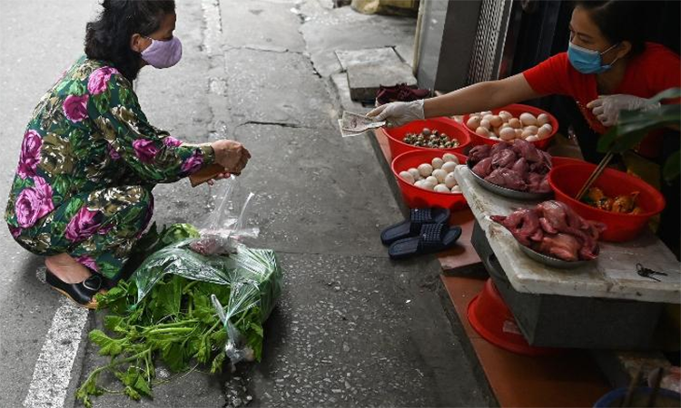

Hành động sớm, truy vết kỹ càng, tuyên truyền rộng rãi, là cách Việt Nam chống Covid-19 thành công theo nhận định của hãng tin Mỹ CNN.

Người phụ nữ mua hàng và chủ quán đều đeo khẩu trang, thực hiện giãn cách xã hội. Ảnh: AFP.
Việt Nam chuẩn bị cho đợt bùng phát Covid-19 trước nhiều tuần trước khi ca nhiễm đầu tiên xuất hiện.